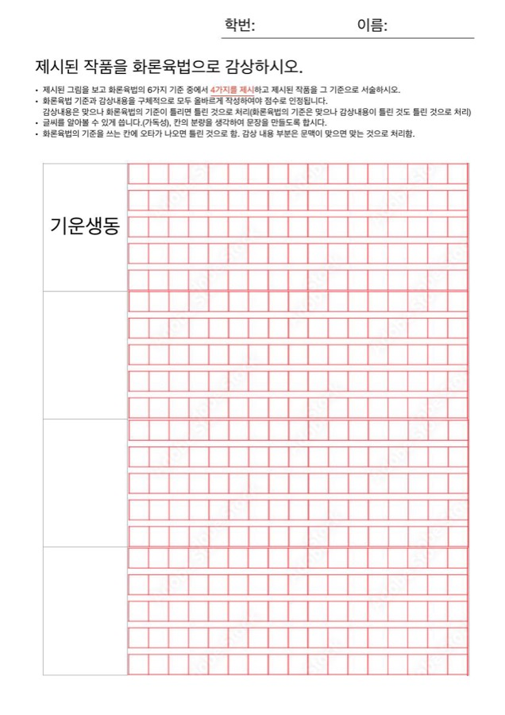

내려받아 인쇄하고, 손으로 써 보세요

화론육법 수행평가지
A4 한 쪽. 왼쪽 칸에 화론육법 기준 이름을, 오른쪽 원고지에 감상 내용을 씁니다. 기준 칸은 4개입니다. 평가 날에는 선생님이 나눠 주니, 이 파일은 연습용입니다.
평가지 쓰는 법
- 6가지 기준 중 4가지를 골라 왼쪽 칸에 기준 이름을 씁니다.
- 기준 이름에 오타가 나면 틀린 것으로 처리됩니다.
- 작품 속 대상을 구체적으로 들어, 칸의 분량에 맞게 문장을 씁니다.
- 글씨는 알아볼 수 있게 또박또박. 필기도구는 자유(빨간색 제외).
제출 전 자기 점검표
- 화론육법 기준을 4가지 썼나요?
- 기준 이름(기운생동·골법용필·응물상형·수류부채·경영위치·전이모사)에 오타가 없나요?
- 기준마다 작품 속 대상을 구체적으로 들어 썼나요?
- 기준의 뜻과 감상 내용이 서로 맞나요?
- 칸의 분량을 채웠나요?
- 학번과 이름을 썼나요?